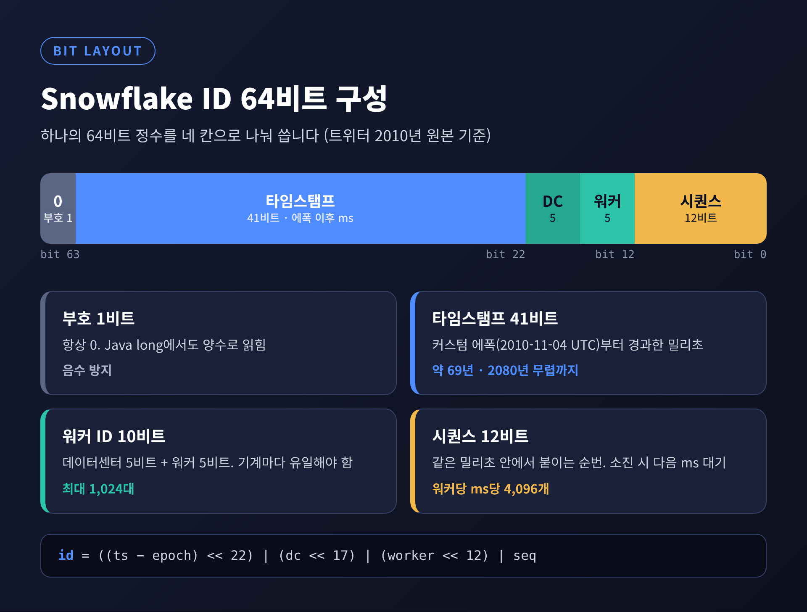
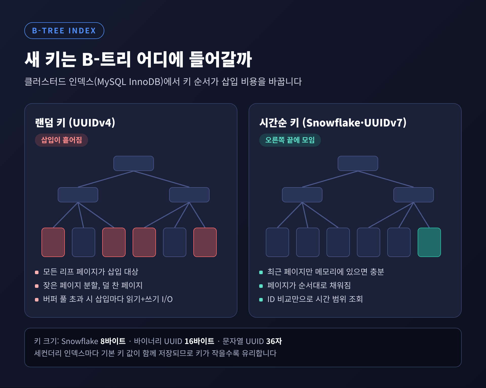
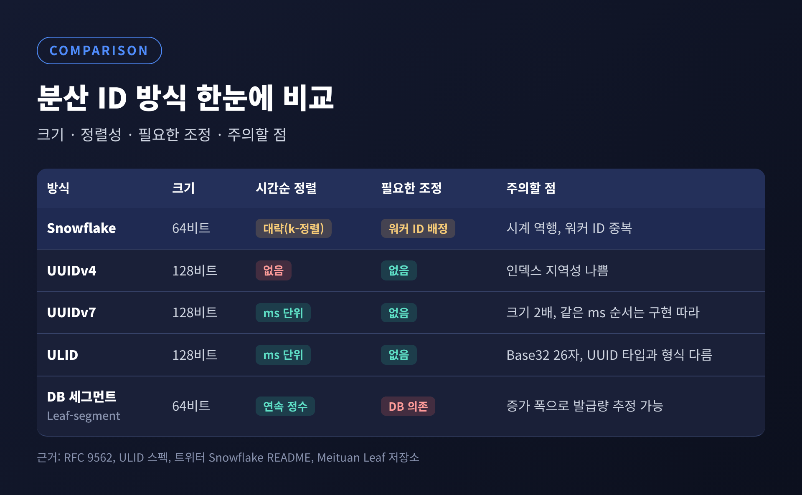

Snowflake ID 원리 — 분산 서버가 중복 없는 ID를 만드는 법

이번 글에서는 Snowflake ID 생성 원리를 정리해 보겠습니다. 서버 수십 대가 서로 묻지 않고도 겹치지 않는 64비트 ID를 만드는 방법, 그리고 실무에서 부딪히는 함정까지 함께 다룹니다.
먼저 세 줄로 요약하면 이렇습니다.
- Snowflake ID는 64비트를 부호 1비트 + 타임스탬프 41비트 + 워커 ID 10비트 + 시퀀스 12비트로 나눕니다.
- 시간이 맨 앞에 있어 대략 생성 순으로 정렬되고, 그래서 B-트리 인덱스에 친화적입니다.
- 대신 시스템 시계에 기대므로, 시계 역행과 워커 ID 중복을 막는 것이 운영의 핵심입니다.
## ■ 왜 중앙 조정 없는 ID가 필요했나
출발점은 2010년의 트위터입니다. 트위터는 MySQL에서 Cassandra로 저장소를 옮기고 있었습니다. 그런데 Cassandra에는 자동 증가 번호 같은 기능이 없습니다. 트위터 README의 표현을 빌리면 "없고, 있어서도 안 되는" 기능이었습니다.
그래서 트위터는 ID 생성기에 몇 가지 조건을 걸었습니다.
- 성능: 프로세스 하나가 초당 최소 1만 개, 응답은 2ms 안에
- 조정 없음: ID를 만드는 기계끼리 서로 확인하지 않을 것
- 대략적인 시간순: 1초 이내를 약속하되 수십 ms 수준을 목표로
- 직접 정렬 가능: 객체를 읽지 않고 ID만으로 정렬
- 작은 크기: 128비트 방식도 있었지만 64비트 안에 담을 것
핵심은 두 번째 조건입니다. 매번 중앙 서버에 "다음 번호 주세요"라고 묻는다면 그 서버가 곧 병목이자 장애 지점이 됩니다. Snowflake는 이 질문 자체를 없애는 쪽을 택했습니다.
이 설계는 2010년 6월에 공개됐고, 이후 Discord·Instagram·Mastodon 등이 자기 환경에 맞게 변형해 쓰고 있습니다.
## ■ 64비트를 네 칸으로 나누는 비트 구성

구조는 단순합니다. 64비트 정수 하나를 네 칸으로 나눠 씁니다.
| 구간 | 비트 | 역할 | 한계 |
|---|---|---|---|
| 부호 | 1 | 항상 0, 음수 방지 | — |
| 타임스탬프 | 41 | 커스텀 에폭 이후 경과 ms | 약 69년 |
| 워커 ID | 10 | 어느 기계가 만들었나 | 1,024대 |
| 시퀀스 | 12 | 같은 ms 안의 순번 | ms당 4,096개 |
맨 앞 1비트를 비워 두는 이유는 Java의 long처럼 부호 있는 64비트 정수에서도 항상 양수로 읽히게 하려는 것입니다.
타임스탬프는 1970년이 아니라 서비스가 정한 기준 시각(에폭)부터 셉니다. 트위터의 에폭은 1288834974657, 즉 2010년 11월 4일 01:42:54.657(UTC)입니다. 41비트로 셀 수 있는 밀리초는 약 69.7년 분량이라, 이 에폭이면 2080년 7월 무렵까지 쓸 수 있습니다. 에폭을 1970년으로 두었다면 이미 40년을 허비한 채 시작했을 것입니다.
워커 ID 10비트는 원본 Scala 코드에서 다시 데이터센터 5비트 + 워커 5비트로 쪼개져 있습니다. 데이터센터 32곳, 곳마다 워커 32대라는 뜻입니다.
시퀀스 12비트는 같은 밀리초 안에서 붙이는 일련번호입니다. 워커 하나가 1ms에 4,096개, 이론상 초당 약 409만 개까지 만들 수 있습니다. 트위터가 요구한 "초당 1만 개"를 훨씬 넘는 여유입니다.
실제 숫자로 확인해 보면 감이 옵니다.
트윗 ID 1888944671579078978을 22비트 오른쪽으로 밀고 에폭을 더하면 2025년 2월 10일 13:34:39.256(UTC)이 나옵니다.
하위 12비트를 보면 322 — 그 밀리초에 처리된 322번째 ID라는 뜻입니다.
ID 안에 생성 시각이 그대로 들어 있는 셈입니다.
변형도 다양합니다. Discord는 2015년 1월 1일을 에폭으로 삼고 타임스탬프 42비트에 워커·프로세스 각 5비트, 증가값 12비트를 씁니다. Instagram은 41비트 시간 뒤에 13비트 샤드 ID와 10비트 시퀀스를 붙였습니다. Sony의 Sonyflake는 시간을 10ms 단위 39비트로 세어 수명을 174년으로 늘리는 대신, 인스턴스 하나가 10ms에 256개만 만들도록 했습니다. 같은 64비트라도 수명·기계 수·초당 생성량 중 무엇을 우선하느냐에 따라 배분이 달라집니다.
## ■ 한 밀리초 안에서 벌어지는 일
트위터의 2010년 원본 코드(IdWorker.scala)를 따라가 보면 생성 과정은 다섯 단계입니다.
System.currentTimeMillis()로 현재 시각을 읽습니다.- 직전에 쓴 시각보다 작으면 시계가 뒤로 간 것으로 보고 예외를 던집니다.
- 직전과 같은 밀리초면 시퀀스를 1 올립니다.
- 시퀀스가 4,096을 넘어 0으로 돌아오면, 다음 밀리초가 될 때까지 기다립니다.
- 새 밀리초라면 시퀀스를 0으로 되돌린 뒤 세 값을 비트 시프트로 합칩니다.
조립식은 ((시각 - 에폭) << 22) | (데이터센터 << 17) | (워커 << 12) | 시퀀스입니다.
메서드 전체는 synchronized로 묶여 있습니다.
여기서 중복이 생기지 않는 이유가 드러납니다. 서로 다른 기계는 워커 ID가 다르고, 같은 기계 안에서는 시각과 시퀀스가 다릅니다. 기계끼리 대화하지 않아도 되는 근거가 바로 이 칸 나누기입니다.
## ■ 시간순 정렬이 B-트리 인덱스에 주는 이점

타임스탬프가 맨 앞에 있으니, 숫자 크기순이 곧 대략적인 생성 순서입니다.
덕분에 "이 ID 이후의 글" 같은 조회를 ID 비교만으로 처리할 수 있습니다.
Discord는 이를 페이지네이션에 그대로 씁니다.
원하는 시각을 (시각 - 에폭) << 22로 바꾸면 그 시점의 경계 ID가 됩니다.
데이터베이스 입장에서는 더 반가운 성질입니다. MySQL InnoDB는 행 자체를 기본 키 B-트리(클러스터드 인덱스)에 저장합니다. 키가 랜덤하면 새 행이 모든 리프 페이지로 흩어집니다. Percona의 분석에 따르면 테이블이 버퍼 풀보다 커진 뒤에는 삽입 한 번에 대개 읽기 한 번, 쓰기 한 번의 I/O가 듭니다. 페이지 분할이 잦아지고 페이지는 덜 찬 채로 남습니다.
키의 크기도 문제입니다.
세컨더리 인덱스는 기본 키 값을 포인터로 함께 저장합니다.
같은 글에서는 10억 행에 세컨더리 인덱스 5개를 둔 테이블을 예로 들었는데, UUID를 36자 문자열로 저장하면 키 값만 약 216GB가 됩니다.
Snowflake ID는 8바이트 BIGINT 하나입니다. 바이너리 UUID(16바이트)의 절반입니다.
반면 시간순 키는 새 행이 B-트리 오른쪽 끝으로 모입니다. 최근 페이지만 메모리에 있으면 되니 캐시 효율이 좋습니다. UUID 표준인 RFC 9562도 랜덤 UUID는 인덱스 지역성이 나쁘고, 시간순 UUID는 지역성 이점이 있다고 명시합니다.
다만 정렬은 "대략"입니다. 워커가 여럿이면 같은 밀리초 안에서 워커 ID 순서가 생성 순서를 이기고, 기계마다 시계 오차도 있습니다. 트위터도 엄격한 순서가 아니라 k-정렬(1초 이내)만 약속했습니다. 정확한 이벤트 순서가 필요하다면 별도의 시각 컬럼을 두는 편이 안전하다고 생각합니다.
## ■ 시계가 뒤로 갈 때 생기는 문제
Snowflake의 약점은 시스템 시계를 믿는다는 데 있습니다. NTP가 빠르게 가던 시계를 바로잡으며 몇 밀리초 되돌리면, 이미 쓴 시각이 다시 돌아옵니다. 그 사이 같은 시퀀스가 나오면 중복 ID가 만들어질 수 있습니다.
원본 Snowflake의 대응은 단호합니다. 현재 시각이 직전 시각보다 작으면 그 시각을 지날 때까지 생성을 거부합니다. README는 NTP로 시계를 정확히 맞추되, 가능하면 "NTP가 시계를 뒤로 옮기지 않는 모드"로 운영하라고 권합니다. 리눅스의 chrony를 예로 들면, 시계를 서서히 맞추는 조정과 즉시 건너뛰는 스텝 이동이 구분돼 있습니다. 역행은 주로 후자에서 생깁니다.
중국 메이퇀(美团)이 공개한 Leaf는 한 걸음 더 나갑니다. 소스 코드를 보면 이렇게 동작합니다.
- 역행 폭이 5ms 이하면 그 두 배만큼 기다렸다가 다시 시각을 읽습니다. 그래도 뒤처져 있으면 오류를 냅니다.
- 5ms를 넘으면 기다리지 않고 바로 오류를 반환합니다.
- 기동할 때 ZooKeeper에 기록된 자신의 마지막 시각이 현재보다 미래면 아예 시작하지 않습니다.
- 실행 중에는 3초마다 자기 시각을 ZooKeeper에 보고합니다.
RFC 9562도 같은 방향입니다. 시계가 뒤로 갔을 수 있다면 시퀀스를 반드시 바꾸고, 새 값이 이전 값보다 큰지 확인하라고 적고 있습니다. 카운터가 넘쳐 중복이 날 상황이면 오류를 내거나 시계가 따라잡을 때까지 기다리라고 합니다.
정리하면 선택지는 셋입니다. 거부하거나, 잠깐 기다리거나, 기동을 막는 것. 어느 쪽이든 "중복보다는 실패가 낫다"는 원칙은 같습니다.
## ■ 워커 ID는 누가 나눠 주나
시계만큼 위험한 것이 워커 ID 충돌입니다. 두 인스턴스가 같은 워커 ID를 받으면, 같은 밀리초에 똑같은 ID를 만들 수 있습니다. 조정을 없앤 대가로 워커 ID만큼은 반드시 유일해야 합니다.
트위터 원본은 설정 파일로 주입하는 방식이었습니다. 범위를 벗어나면 기동 시 예외를 던질 뿐, 중복 여부는 운영자가 책임집니다.
Leaf는 ZooKeeper의 영구 순차 노드를 씁니다.
IP:포트 이름으로 노드를 만들면 ZooKeeper가 붙여 주는 순번이 곧 워커 ID가 됩니다.
같은 IP와 포트로 다시 뜨면 기존 번호를 재사용합니다.
ZooKeeper가 죽어 있을 때를 대비해 받은 번호를 로컬 파일에도 저장해 둡니다.
컨테이너 환경이라면 이 파일 경로를 외부 볼륨에 연결해야 재시작 후에도 남는다는 해설이 있습니다.
오토스케일로 인스턴스가 자주 바뀌는 환경이라면 고민이 깊어집니다. 1,024개라는 한계 안에서 번호를 회수하고 재배정하는 규칙까지 정해 두어야 합니다. 그렇지 않으면 번호가 조용히 바닥나거나, 더 나쁘게는 겹칩니다.
## ■ UUIDv4·UUIDv7·ULID·세그먼트 방식과 비교

Snowflake만 답은 아닙니다. 대표적인 대안을 한 표로 놓고 보면 성격이 분명해집니다.
| 방식 | 크기 | 시간순 | 필요한 조정 | 주의할 점 |
|---|---|---|---|---|
| Snowflake | 64비트 | 대략 정렬 | 워커 ID 배정 | 시계 역행, 워커 ID 중복 |
| UUIDv4 | 128비트 | 없음 | 없음 | 인덱스 지역성 나쁨 |
| UUIDv7 | 128비트 | ms 단위 정렬 | 없음 | 크기 2배, 같은 ms 순서는 구현 따라 다름 |
| ULID | 128비트 | ms 단위 정렬 | 없음 | 표준 UUID 타입과 문자열 형식이 다름 |
| DB 세그먼트(Leaf) | 64비트 | 연속 정수 | DB 의존 | 번호 증가로 발급량 추정 가능 |
UUIDv4는 122비트가 전부 랜덤입니다. 조정이 전혀 필요 없지만 앞서 본 인덱스 문제를 그대로 안고 갑니다.
UUIDv7은 2024년 5월 RFC 9562로 표준이 됐습니다.
앞 48비트가 밀리초 타임스탬프이고 나머지는 대부분 랜덤입니다.
RFC는 가능하면 v1·v6 대신 v7을 쓰라고 권고합니다.
같은 밀리초 안의 순서는 카운터를 두거나, 랜덤 값을 증가시키거나, 남는 12비트에 더 정밀한 시각을 넣는 세 가지 방법 중에서 구현이 고릅니다.
PostgreSQL 18은 uuidv7() 함수를 기본 제공하며, 밀리초 뒤에 서브 밀리초 시각을 채우는 방식을 씁니다.
ULID는 48비트 타임스탬프와 80비트 랜덤으로 이뤄진 128비트 ID입니다. Crockford Base32로 26자에 담아 UUID 표기(36자)보다 짧고, 문자열 그대로 정렬됩니다. 같은 밀리초 안의 순서는 기본적으로 보장하지 않으며, 단조 모드에서는 랜덤부를 1씩 올립니다.
DB 세그먼트 방식은 발상이 다릅니다.
Leaf-segment는 UPDATE leaf_alloc SET max_id = max_id + step으로 번호 구간을 통째로 받아 메모리에서 하나씩 꺼냅니다.
현재 구간을 10% 이상 쓰면 다음 구간을 미리 받아 두는 더블 버퍼를 둡니다.
구간을 15분 안에 다 쓰면 다음 구간 크기를 두 배로, 30분 넘게 걸리면 절반으로 조절합니다.
Leaf README에 따르면 4코어·8GB VM에서 초당 약 5만 건, TP999 1ms를 기록했습니다.
연속 정수라 인덱스에는 가장 유리하지만 DB에 기대고, 번호 증가 폭으로 외부에서 발급량을 짐작할 수 있다는 점은 감안해야 합니다.
64비트로 충분하고 조회 성능이 중요하다면 Snowflake, 운영 부담을 줄이고 표준을 따르고 싶다면 UUIDv7이 무난한 출발점이라고 봅니다.
## ■ Java·Spring에서 구현할 때 확인할 것
직접 만들거나 라이브러리를 고를 때 살펴볼 점을 모았습니다.
첫째, JSON으로 내보낼 때는 문자열로 바꿉니다.
JavaScript의 숫자는 53비트까지만 정확합니다(최대 안전 정수 9,007,199,254,740,991).
X 개발자 문서는 10765432100123456789가 10765432100123458000으로 바뀌어 버리는 예를 들며, 항상 id_str을 쓰라고 권합니다.
Discord가 API에서 ID를 문자열로 주는 이유도 같습니다.
Spring에서는 Jackson의 @JsonSerialize(using = ToStringSerializer.class)처럼 Long 필드를 문자열로 내보내는 설정을 해 두는 편이 안전합니다.
둘째, 시계 역행 처리를 반드시 넣습니다. 아래는 원본 흐름을 Java로 옮긴 최소 골격입니다.
public synchronized long nextId() {
long now = System.currentTimeMillis();
if (now < lastTs) { // 시계 역행
throw new IllegalStateException("clock moved backwards " + (lastTs - now) + "ms");
}
if (now == lastTs) {
seq = (seq + 1) & 0xFFF; // 12비트 시퀀스
if (seq == 0) { // 4096개 소진
while ((now = System.currentTimeMillis()) <= lastTs) { }
}
} else {
seq = 0;
}
lastTs = now;
return ((now - EPOCH) << 22) | (workerId << 12) | seq;
}
셋째, 워커 ID 배정 경로를 먼저 정합니다. 설정값, ZooKeeper, DB 테이블 등 무엇을 쓰든 "두 인스턴스가 같은 번호를 받지 않는다"는 보장이 있어야 합니다.
넷째, synchronized 경합을 의식합니다.
원본과 Leaf 모두 메서드 단위 잠금입니다. 한 인스턴스가 1ms에 4,096개를 넘기면 다음 밀리초까지 바쁜 대기에 들어갑니다.
다섯째, 에폭은 한 번 정하면 바꾸지 않습니다. Leaf는 에폭이 현재 시각보다 미래면 기동을 거부합니다. 에폭이 바뀌면 기존 ID와의 순서가 무너집니다.
UUIDv7 쪽을 택한다면 선택지도 늘었습니다.
Hibernate ORM 7의 @UuidGenerator에는 VERSION_7 스타일이 있습니다(현재 인큐베이팅 표시).
OpenJDK에도 UUID.ofEpochMillis(long)가 추가됐다는 릴리스 노트가 올라와 있습니다.
다만 이 메서드는 같은 밀리초 안의 순서를 보장하지 않는다는 해설이 있으니, 엄격한 단조성이 필요하다면 확인하고 쓰시길 권합니다.
정리하면 이렇습니다. Snowflake ID는 "누가, 언제, 몇 번째로 만들었는가"를 64비트 한 칸에 새겨 넣는 방법입니다. 그래서 중앙 서버 없이도 겹치지 않고, 시간순으로 정렬되며, 인덱스에도 부담이 적습니다.
예전에는 고유 ID라 하면 DB 자동 증가 번호가 당연했습니다. 지금은 서버가 늘고 저장소가 나뉘면서, 번호를 만드는 일 자체를 각 서버에 나눠 주는 쪽으로 옮겨 왔습니다.
아쉬운 점도 분명합니다. 시계와 워커 ID라는 두 가지 전제가 무너지면 중복은 조용히 찾아옵니다.
결국 남는 질문은 하나입니다 — 우리 시스템이 그 두 전제를 지킬 준비가 되어 있는가. 준비가 되어 있다면, Snowflake는 지금도 충분히 믿을 만한 선택이라고 답하겠습니다.
## 참고 자료
- twitter-archive/snowflake README (snowflake-2010)
- twitter-archive/snowflake IdWorker.scala
- Wikipedia — Snowflake ID
- RFC 9562 — Universally Unique IDentifiers (UUIDs)
- Discord Developer Docs — Snowflakes
- X Developer Docs — X IDs
- Meituan-Dianping/Leaf (GitHub)
- ULID Specification
- Percona — UUIDs are Popular, but Bad for Performance
- PostgreSQL 18 — UUID Functions
- Hibernate ORM 7.1 — UuidGenerator.Style
- OpenJDK JDK-8372512 — UUIDv7 지원 릴리스 노트
- sony/sonyflake README
- Red Hat — 시스템 시계 수동 조정(chrony)
#SnowflakeID #분산ID #UUIDv7 #ULID #B트리인덱스 #시계역행 #백엔드개발 #SpringBoot